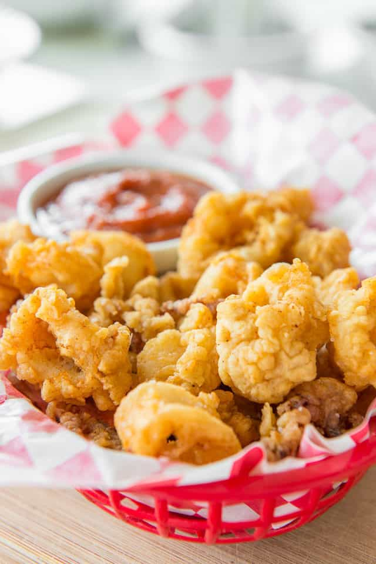

Fried Calamari

Golden Fried Calamari
Fried Calamari is incredibly easy to make at home, and so much better than
the restaurant! This recipe has a crispy batter that fries perfectly to a golden
brown crunch. I share tips for ensuring the calamari isn’t tough, and has great
flavor and robust crispiness.
Ingredients
- 1 lb cleaned calamari tubes cut into rings,
and tentacles left whole
- juice of 1/2 a lemon
- 2 cups flour
- 1/2 tsp cayenne
- 1/2 tsp paprika
- 1 tsp salt
- 1/2 cup buttermilk
- marinara sauce, lemon wedges, or aioli, for serving, optional
Steps
Equipment
Prep
- Place the calamari into a bowl with the lemon juice,
and let sit for 15 minutes. This will tenderize the calamari.
- Preheat the tallow or your frying oil of choice to 375 degrees F,
either in a deep fryer or a large cast iron pot, no more than 1/2 full.
Batter
- In a medium bowl, whisk to combine the flour, cayenne, paprika, and salt.
Add half of this mixture to another medium bowl. Place the buttermilk
or milk in a third bowl. Place the three bowls on the counter in the following
order: spiced flour, buttermilk, and spiced flour.
- Remove the calamari from the lemon juice, then dredge each piece in the flour,
shaking off any excess, then into the buttermilk, shaking off the excess,
then back into the second bowl of flour. Repeat this process with all the calamari.
- Fry the calamari in batches for about 2-3 minutes total, until golden brown.
Then drain on a paper towel and immediately salt the calamari generously so the
salt sticks. Serve with marinara sauce and lemon wedges, if desired. Enjoy!